Only Juni is playable.3new designs are references, never spawned as static portraits or fake actors.
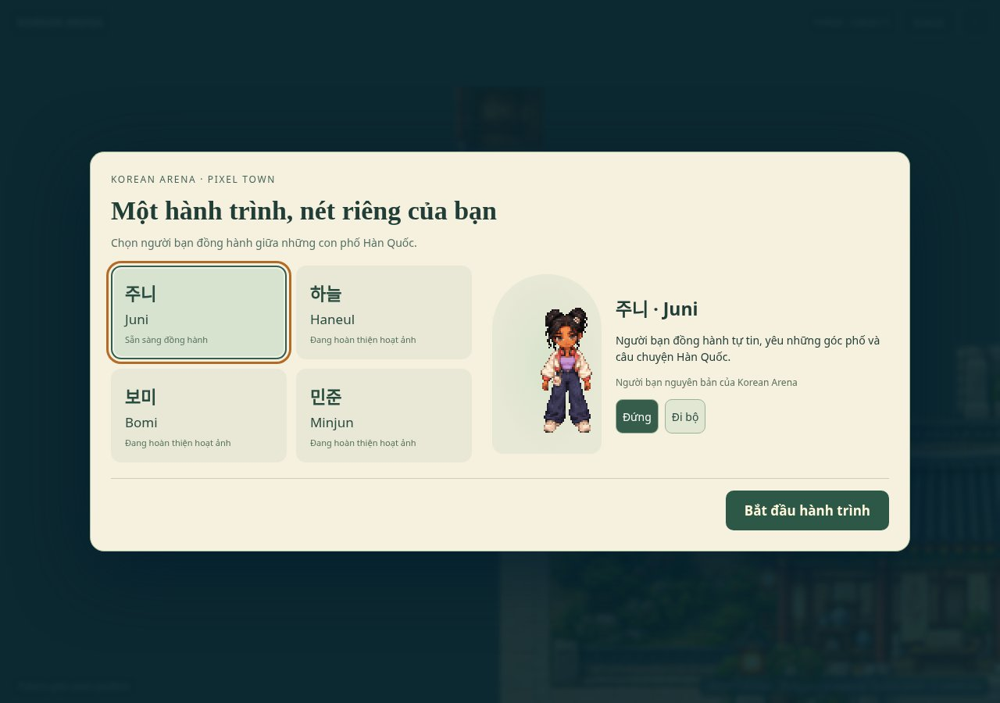
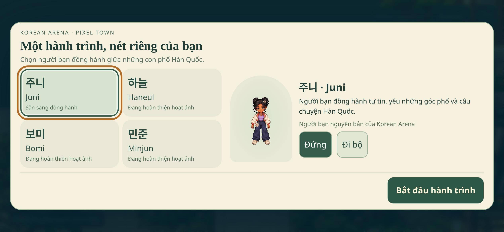
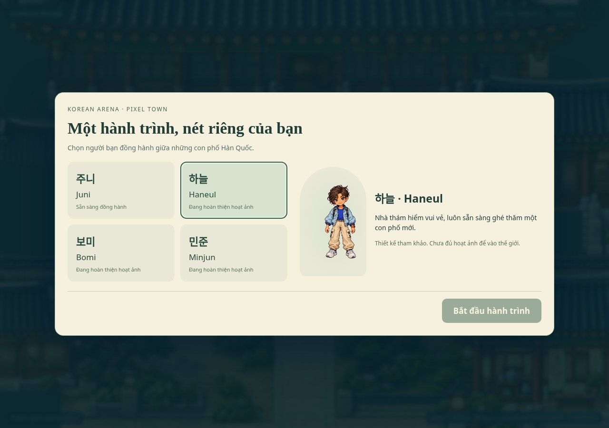
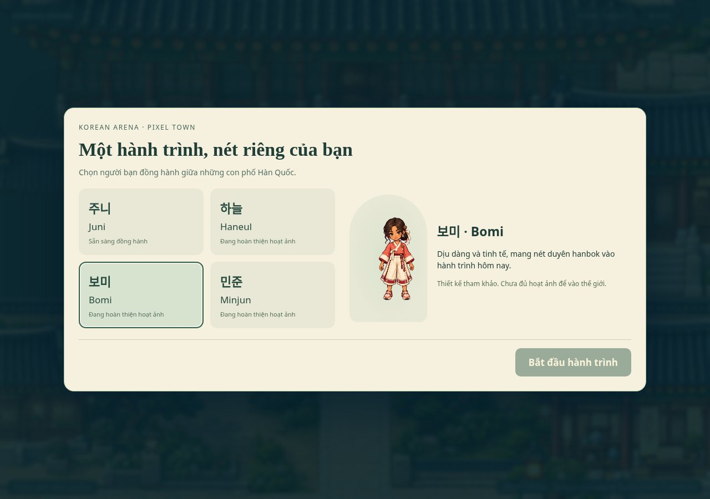
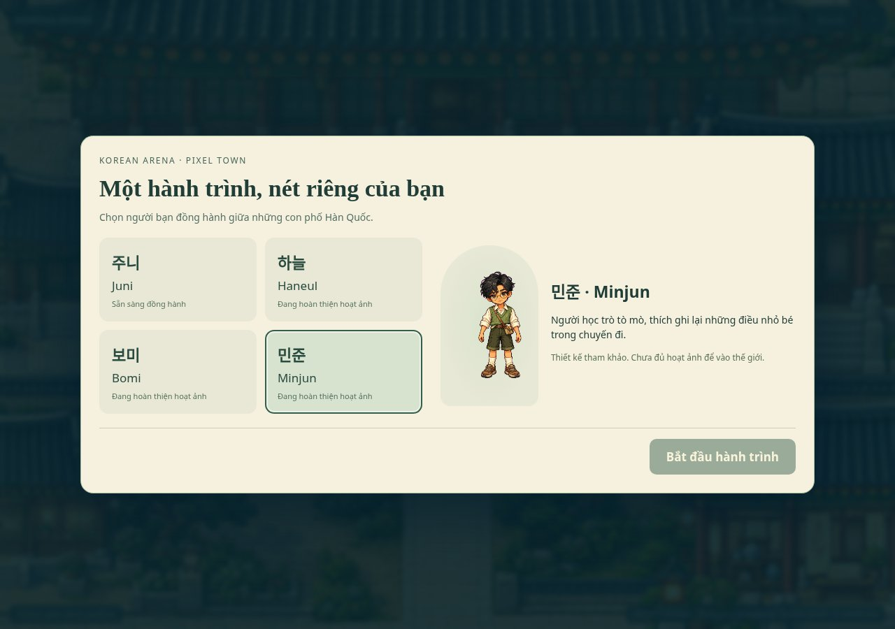
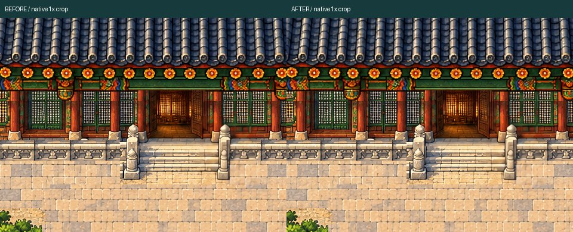
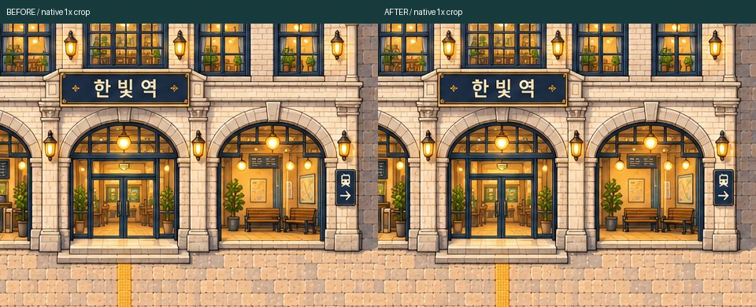
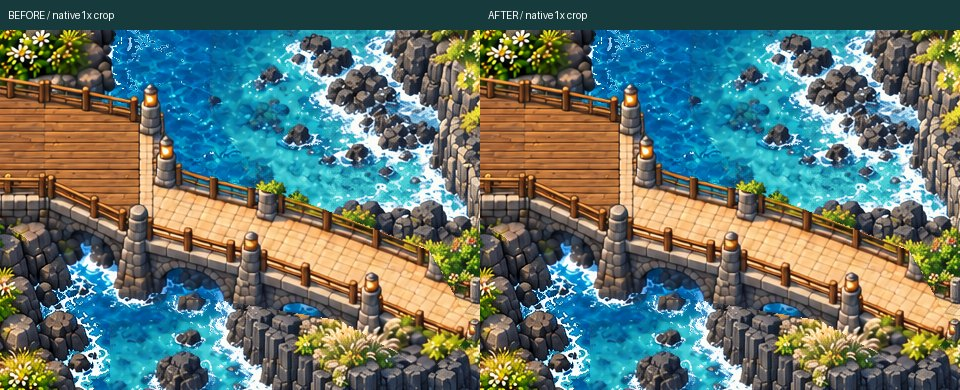
walk-back: full native
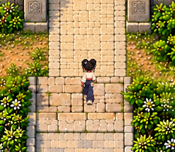
walk-left: full native
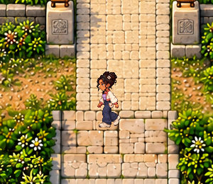
walk-front: full native
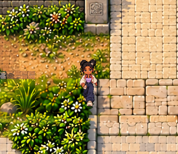
walk-right: full native
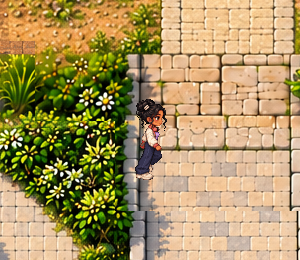
run-back: full native
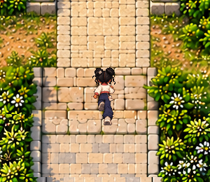
run-left: full native
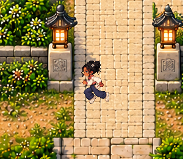
run-front: full native
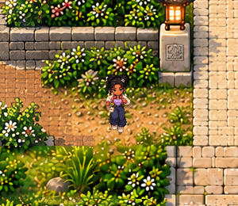
run-right: full native
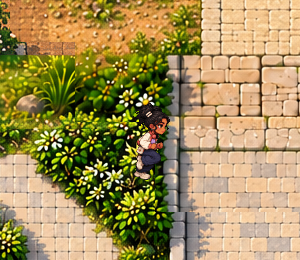
wave: full native
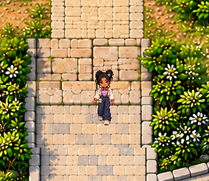
celebrate: full native
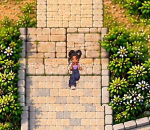
Physical Android/iPhone and hardware performance NOT TESTED. Three new native character packs INCOMPLETE. No Phase2, main merge or deployment.